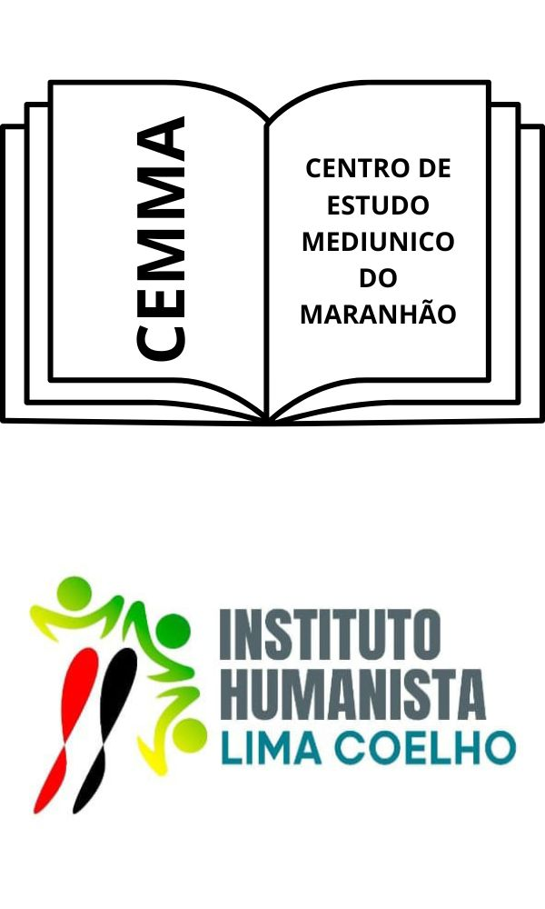

- Sindicato dos Jornalistas Profissionais de São Luís
- Associação dos Cronistas e Locutores Esportivos do Maranhão
- Associação Maranhense de Imprensa
- Associação Maranhense de Escritores
- Associação dos Diplomados da Escola Superior de Guerra, tendo participado do Nono Ciclo de Estudos de Política e Estratégicas
- Instituto Histórico e Geográfico do Maranhão
- Academia Atheniense de Letras e Artes de São Luís
- Confraria dos Poetas do Brasil
- Academia de Letras do Brasil, fundada em 2001, PhI, Cadeira nº 01 ALB/MA, com sede em Brasília, diplomado como membro Fundador Vitalício, em 13 de maio de 2003
- Academia Maçônica Maranhense de Letras
- Instituto Histórico da Maçonaria Maranhense
- Membro da Augusta e Respeitável Loja Simbólica Godofredo Viana nº 1474
- Secretário Adjunto de Interior e Relações Públicas do Grande Oriente do Estado do Maranhão – Goema – tendo se afastado para assumir a venerança de sua loja
- Venerável Mestre da A. R. L S. Godofredo Viana nº 1474
- Diretor de Comunicação do HIMM, dentre outras atividades
